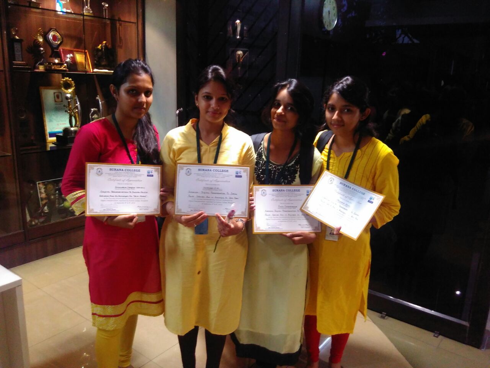

Blog
-
Karnataka Science and Technology Academy
Bharatesh ChakravarthiKarnataka Science and Technology Academy (KSTA) had invited for technical papers throughout Karnataka to be a part of 9th Annual KSTA conference on Science, Technology and Innovation for 21st Century. Myself, Bharatesh Chakravarthi, Asst. Prof, Dept. of ISE had submitted one page abstract in the prescribed format of KSTA to clear the initial selection process.
Read More -

Interdisciplinary conference on Digital Transformation
Team SurakshaThere was an Interdisciplinary National Conference at Surana College on Sept 8, 2016 in which we had participated under the guidance of Asst Prof. Bharatesh Chakravarthi. Our day at the national conference was once in a lifetime and we all feel lucky to have had the opportunity to see what it’s like to put forward an amazing idea and get recognized, appreciated for it.
Read More -
30th CSI Karnataka Students Convention
Team SurakshaThe 30th CSI Karnataka Students Convention was held at K.S Institute of Technology on November 10th, 11th and 12th, 2016 in which we had participated under the guidance of Asst Prof. Bharatesh Chakravarthi. It was a marvellous experience and something that we would treasure for a life time. Looking forward to participate in many such events.
Read More -

State Level Science Exhibition cum Competition
Team SurakshaA State Level Science Exhibition cum Competition was held on March 10th 2017 at VTU, Belgaum, in which I, Aishwarya and my teammates Meghana, Hemashri and Pooja participated under the guidance of Asst Prof. Bharatesh Chakravarthi. It was the first time that we would be going there. So we all were very excited to see the campus of the university we belong to.
Read More